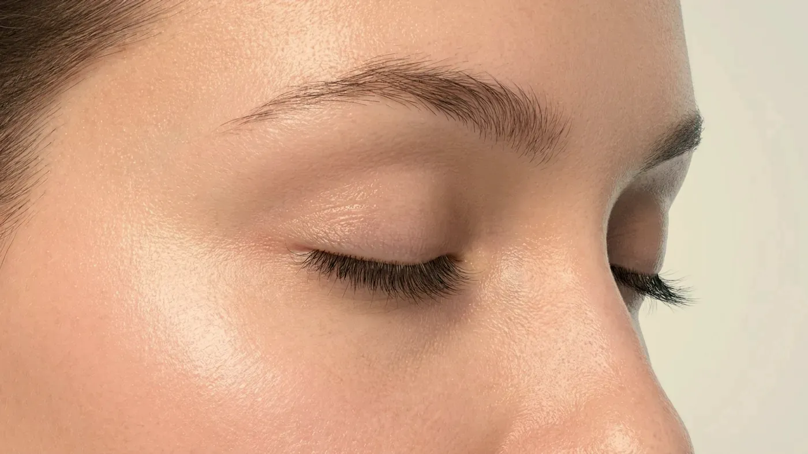
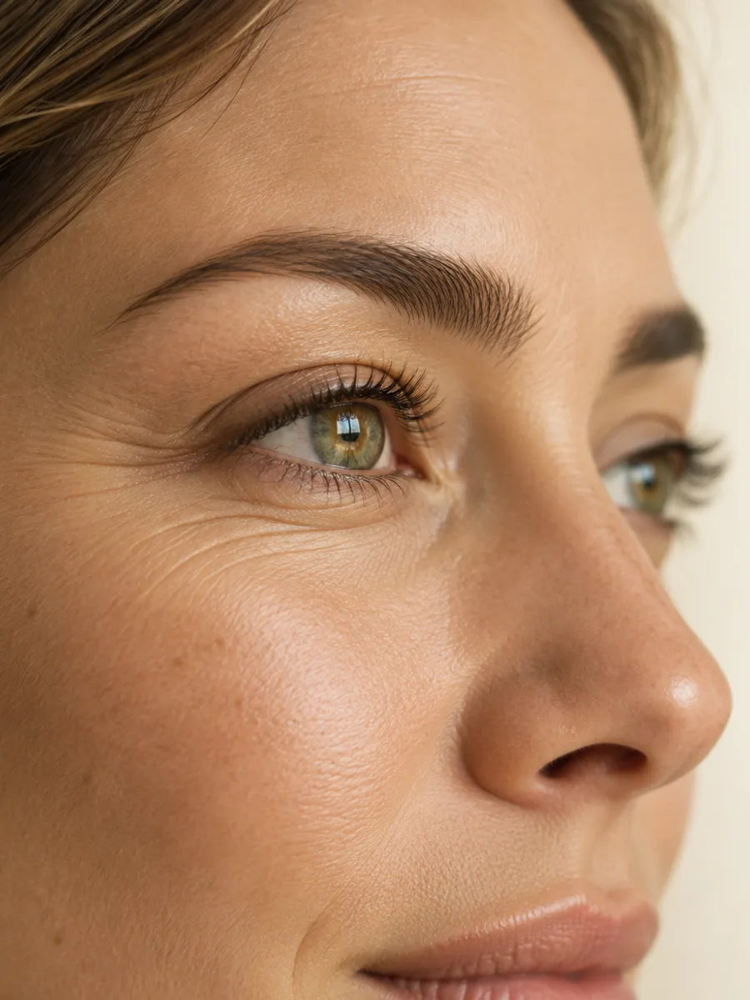

Bölge rehberi · Göz çevresi
Yüzün en ince derisi, en temkinli planı ister.
Alt göz kapağında deri milimetrenin altına iner ve burada oluşan en küçük düzensizlik bile karşınızdakinin gözüne çarpar. Koyu halkalar, göz kenarındaki kırışıklar ve kaşın düşmesi dışarıdan birbirine karışsa da her birinin nedeni başkadır. Muayenede önce bu nedenler ayrılır; sonuç çoğu zaman beklemek ya da hiç işlem yapmamak olur ve bu da tıbben yerinde bir yanıttır.

Temsilî görsel · yapay zekâ ile üretildiDoku yapısı
Göz çevresinde neden bu kadar dikkatli olunur?
Göz çevresi için muayeneye gelen pek çok kişi, beklediğinden daha az işlemle ya da hiç işlem yapılmadan ayrılır. Bunun ardında bölgenin dört anatomik özelliği yatar; bu özellikler bir araya geldiğinde yüzün başka hiçbir yerinde olmadığı kadar küçük bir hata payı kalır. Örneğin yanağa konduğunda hiç belli olmayacak bir damla ürün, göz altında haftalarca fark edilebilir.
Milimetrenin altında bir deri
Alt kapak derisi, insan vücudundaki en ince deri tabakalarındandır. Altına konan ürün ışıkta seçilebilir, parmakla yoklandığında hissedilebilir, hatta ışığı saçarak mavimsi bir gölge oluşturabilir. Kullanılan miktarın yüzün geri kalanıyla kıyaslanamayacak kadar küçük tutulması bundandır.
Sıvı geç boşalır
Göz çevresinden lenf sıvısının uzaklaşması ağır işler. İşlemden sonra şişliğin başka bölgelere göre uzun sürmesi ve su bağlayan bir ürünün burada aylarca süren bir kabarıklık bırakabilmesi bu yüzdendir. Sonucu yorumlamak için şişliğin bütünüyle inmesini bekleriz.
Göze uzanan damar bağlantıları
Bu bölgedeki atardamarların bir kısmı, gözün iç dolaşımıyla doğrudan bağlantılıdır. Nadir olsa da bu yolla görmeyi etkileyen damar tıkanıklıkları bildirilmiştir. Olasılığı düşük ama sonucu ağır ve geri çevrilmesi zor bir risk söz konusu olduğundan, karar vermeden önce aranan güvence de daha yüksektir.
Her an hareket, her an göz önünde
Göz kapakları gün içinde binlerce kez kırpılır ve karşınızdaki kişinin ilk baktığı yer gözlerinizdir. Milimetrik bir düzensizlik bile bu yüzden fark edilir. Plan küçük adımlarla ilerler: ilk seansta az miktar kullanılır, etkisi yerleşince ikinci bir adıma gerek olup olmadığına birlikte bakılır.
Üç ayrı konu
Göz altı, kaz ayağı ve kaş neden ayrı konulardır?
Birbirine birkaç santimetre uzaklıkta olsalar da bu üç konunun nedeni, yanıtı ve riski farklıdır. Aşağı indikçe görseldeki kart, okuduğunuz başlığa göre değişir.

Temsilî görsel · yapay zekâ ile üretildiKoyu halkanın arkasındaki beş neden
Göz altının koyu görünmesine şunlardan biri ya da birkaçı yol açar: deride biriken pigment, ince deriden seçilen damarlar, zamanla incelen deri, yanakla kapak arasındaki çukurun oluşturduğu gölge ve biriken sıvı. Uzaktan bakıldığında hepsi aynı “yorgun göz” izlenimini verir; oysa birine uygun bir işlem ötekinde görünümü kötüleştirebilir. Göz altı yağının öne doğru taşmasıyla oluşan torba ise bambaşka bir konudur ve cerrahi değerlendirme ister.
Gülümsemenin bıraktığı izler
Gülerken göz kenarında yelpaze gibi açılan kırışıklar, gözü çember gibi saran kasın yıllar boyunca kasılmasıyla derinleşir; halk arasında bunlara “kaz ayağı” denir. Alt kapağın hemen altındaki ince kırışıklıkların kaynağı ise çoğunlukla kas değil, incelen ve nemini yitiren deridir.
Kasın yol açtığı çizgilerde az sayıda noktaya düşük doz uygulanır; amaç gülümsemenizi silmek değil, çizgilerin keskinliğini azaltmaktır. Yüzünüz dinlenirken de kaybolmayan çizgiler için yalnızca kası gevşetmek çoğu zaman yeterli olmaz.
Kaş, şakak ve göz kapağı dengesi
Kaşın yüksekliği, onu yukarı çeken alın kası ile aşağı çeken kaslar arasındaki çekişmeyle belirlenir; bu dengeye dokunan her işlem kaşın yerini ve kavisini değiştirebilir. Göz kapağınızda hafif bir düşüklük varsa ya da görüşünüzü açmak için farkında olmadan kaşlarınızı kaldırıyorsanız işlem yapılmaz veya kapsamı daraltılır. Kaşın dış ucu şakaktaki hacim kaybı yüzünden düşmüşse de yanıt göz çevresinde değil, şakakta aranır.
Fark nerede
Koyu halkanın nedeni muayenede nasıl ayırt edilir?
Işığın yönünü değiştirmek, deriyi hafifçe germek ve farklı açılardan bakmak, hangi nedenin öne çıktığını gösterir. Her nedenin kendi yanıtı vardır; bazılarında dolgu hiç gündeme gelmez.
Renk birikimi
Kahverengimsi bir tondur; deriyi hafifçe gerdiğinizde bile silinmez. Hacim eklemek bu rengi değiştirmez; önce güneşten korunma, ardından lekeye yönelik seçenekler konuşulur.
Seçilen damarlar
Morumsu ya da mavimsi bir renktir ve ışık değiştikçe koyulaşıp açılır. Dolgu çoğunlukla bu görünümü azaltmaz; kimi durumda damarları daha da öne çıkarabilir.
İncelen deri
Deri inceldikçe altındaki kas ve damarlar daha çok görünür; bölge hem koyu hem buruşuk bir hâl alır. Bu durumda deri kalitesini desteklemeye yönelik seçenekler öne çıkar.
Çukurun gölgesi
Yanakla alt kapak arasındaki geçiş derinleştikçe altında bir gölge oluşur. Dolgu yalnızca bu tabloda düşünülebilir ve çukurun sınırlarının net olması şarttır.
Biriken sıvı
Sabah uyandığınızda belirgin, akşama doğru azalan bir şişliktir. Az uyku, tuzlu yemekler, mevsimsel burun akıntısı, tiroid ya da böbrek kaynaklı sıvı tutulması bunu artırabilir. Böyle bir göz altına dolgu yapmak şişliği büyütebilir.
"Göz altında yağın öne taşmasıyla oluşan torba, iğneyle değil cerrahiyle ele alınan bir durumdur; bu tabloda sizi ilgili uzmanlık dalına yönlendiririz."
Olası yollar
Göz çevresi için hangi seçenekler var?
Buradaki başlıklar ancak doğru neden bulunduğunda konuşulur. Göz çevresinde seçenek sayısı azdır; işlem yapılmayan durumların listesi ise öteki bölgelerden uzundur.
Botulinum toksin
Kaz ayağıBirkaç gün→Göz altı dolgusu
Hacim kaybı1 haftaya varabilir→Somon DNA ve polinükleotid
Cilt kalitesiMuayenede belirlenir→Gençlik aşısı (skinbooster)
Cilt kalitesiMuayenede belirlenir→Pico lazer ile leke
PigmentMuayenede belirlenir→Fraksiyonel lazer
YüzeyMuayenede belirlenir→
Botulinum toksin
Gülerken göz kenarında beliren kas kaynaklı çizgilerde, az noktaya düşük dozla düşünülür.
Sayfasına git →Koyuluğun nedeni renk birikimiyse ilk ve en önemli adım güneşten korunmaktır; lekelerle ilgili genel bilgiyi cilt tonu ve leke sayfasında bulabilirsiniz. Daha önce yapılmış bir dolgu göz altında şişlik ya da dalgalanma bıraktıysa yeni bir ekleme yerine önce mevcut durum incelenir; dolgunun eritilmesiyle ilgili bilgi dolgu uygulamaları sayfasında.
Kimler için
Göz çevresine hangi durumlarda işlem yapılmaz?
Göz çevresinde işlemden kaçınılan durumlar, yüzün diğer bölgelerine göre daha fazladır. En ufak bir tereddüt kalırsa işlem yapmayız; bu bölgede beklemek her zaman kabul edilebilir bir yoldur.
Kimlere uygulanmaz
- Sıvı tutmaya yatkınlık, sabahları kabaran göz altı, tiroid ya da böbrek kökenli ödem
- Alt kapakta belirgin sarkma ya da öne taşan yağ torbası
- Koyuluğun renk birikiminden ya da seçilen damarlardan kaynaklandığı tablolar — dolgu bu durumlarda uygulanmaz; renk ve damar sorunu kendi başlıkları altında konuşulur
- Düşük göz kapağı ya da görme alanını daraltan bir sorun
- Gebelik, emzirme ya da kullanılacak içeriğe karşı daha önce görülmüş aşırı duyarlılık tepkisi
Ertelenen ya da ayrıca planlanan durumlar
- Mevsimsel göz kaşıntısının ya da burun akıntısının arttığı dönemler
- Kan sulandırıcı ilaç ya da pıhtılaşma sorunu
- Bölgede daha önce kullanılmış ve içeriği bilinmeyen bir ürün
- Yeni geçirilmiş göz enfeksiyonu ya da göz ameliyatı
- Uykusuzluk, tuzlu beslenme gibi değiştirilebilir etkenlerin sürmesi
İşlem günü ve ertesinde göz çevrenize bastırmamanızı, ovmamanızı ve yüzüstü uyumamanızı isteriz. Göz makyajına hekiminizin belirttiği süre boyunca ara verin; birkaç gün sıcak ortamlar ve ağır spor da bekleyebilir. Kontakt lens kullanıyor olmanız işleme engel değildir, yalnızca işlem günü ve sonrasındaki kısa bir süre lenslerinizi takmamanız istenebilir. Genel öneriler için uygulama sonrası takip sayfasına bakabilirsiniz.
İşlem sırasında ya da sonrasında görüşünüzde bulanıklaşma, görme alanınızda kararma ya da kayıp, göz çevresinde dayanılmaz ağrı, deride beyazlaşma veya morumsu ağ görünümü fark ederseniz hiç beklemeden bizi 0539 933 08 08 numarasından arayın. Telefonla ulaşamazsanız 112’yi arayın ya da doğrudan en yakın acil servise gidin.
Soru–cevap
Aklınızdaki soruyu seçin, yanıtı yanda okuyun
Bir adım ötesi
Göz çevrenizi önce birlikte inceleyelim
Cevizlik Mah. Ebuzziya Cad. No:47/1, Bakırköy / İstanbul — muayenede önce koyu halkanın ya da çizginin nedenini buluyor, bir işleme gerek olup olmadığını ancak ondan sonra konuşuyoruz.
Metni hazırlayan ve tıbbi açıdan gözden geçiren: Uzm. Dr. Rahmi Cebeci (Aile Hekimliği Uzmanı · Medikal Estetik Sertifikalı).
Buradaki anlatım herkese yöneliktir; size özel bir teşhis ya da tedavi planı sunmaz, muayenenin yerini tutmaz. Her uygulamanın etkisi kişiye göre farklı olur.